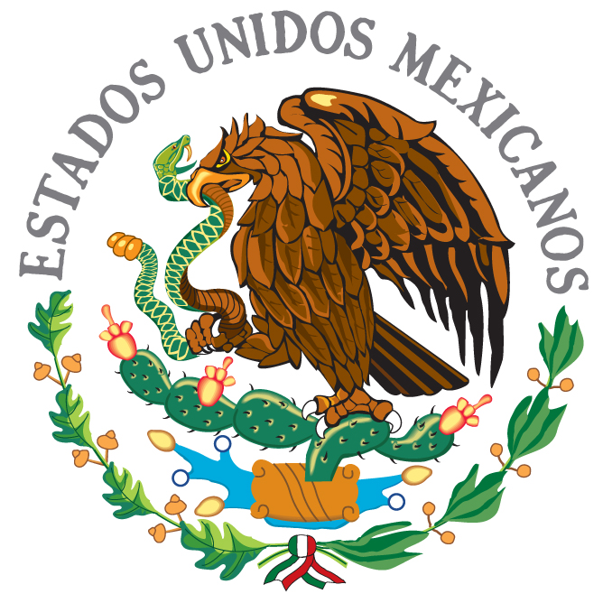

CULTURA
SÍMBOLOS PATRIOS
El Himno Nacional Mexicano, la bandera de México y el Escudo Nacional de México son los símbolos patrios de México que representan la identidad de la patria y refuerzan un sentimiento de pertenencia que busca la unión de aquellos que habitan el país. En esta categoría se agrupan los símbolos que la Constitución Política de los Estados Unidos Mexicanos reconoce como propios de la Nación mexicana, los cuales han ido cambiando a través de la historia.

MÚSICA
ÓPERA
En el año 1711, se estrenaba en la Ciudad de México la ópera La Parténope, con música de Manuel de Sumaya, maestro de la capilla catedralicia junto con Francisco López Capillas y Juan Gutiérrez de Padilla, uno de los más grandes compositores barrocos mexicanos, la especial importancia de esta ópera es que es la primera compuesta en América del Norte, esta ópera da inicio a la fecunda y aún poco estudiada historia de la creación operística mexicana no interrumpida desde entonces durante trescientos años.
La ópera Guatemotzín, de Aniceto Ortega, es el primer intento consciente por incorporar elementos nativos a las características formales de la ópera. Dentro de la producción operística mexicana del siglo XIX sobresalen la ópera Agorante, rey de la Nubia de Miguel Meneses, estrenada durante las festividades conmemorativas por el cumpleaños del emperador Maximiliano I, las óperas Pirro de Aragón de Leonardo Canales, Keofar de Felipe Villanueva y ante todo la producción operística de Melesio Morales, el compositor mexicano de óperas más importante del siglo XIX, cuyas obras tuvieron gran éxito entre el público de Ciudad de México y que se llegaron a estrenar en Europa. En la primera mitad del siglo XX sobresalen en la creación operística mexicana Julián Carrillo, Sofía Cancino de Cuevas, José F. Vásquez entre otros, todos ellos fueron relegados por la historiografía musical oficial que tan solo reconoció la obra de los compositores nacionalistas.
Desde finales del siglo XX hay un creciente interés de los compositores por escribir ópera. Entre los compositores mexicanos de inicios del siglo XXI que sobresalen con sus óperas debe mencionarse a Federico Ibarra, Daniel Catán, Víctor Rasgado, Luis Jaime Cortez, Julio Estrada, Gabriela Ortiz entre otros.
La difusión de la ópera mexicana es casi nula por varias razones de ellas sobresalen dos, durante el periodo inmediato a la Revolución Mexicana, los gobiernos en su mayoría de muy bajo nivel educativo y aún analfabetas mandaron destruir los teatros de ópera existentes en Ciudad de México. El segundo factor para la poca difusión de la cultura mexicana operística es que las autoridades correspondientes no programan las obras. Aún después del término de la Dictadura Perfecta y la restauración de la Democracia en México en el año 2000, las autoridades culturales no se han preocupado por enmendar esta política de desconocimiento de la cultura mexicana operística. Finalmente, la falta de un teatro de ópera exclusivo para la difusión de la cultura operística mexicana, finalmente debe añadirse que el 98 % de la música compuesta en México jamás ha sido publicada, de esto se deduce que una de las mayores necesidades es un programa especial de rescate, edición y publicación de la música de los compositores mexicanos.
MÚSICA POPULAR Y FOLCLÓRICA
La música mexicana es el resultado de diversas influencias. Se sabe muy poco de la música prehispánica, aunque son abundantes los grupos que reivindican esa tradición a lo largo de todo el país. La danza del Venado, de los indios yaquis de Sonora y mayos de Sonora y Sinaloa, es uno de los pocos testimonios de la música prehispánica que han persistido hasta nuestros días, tanto en su instrumentación como en la lírica; aunque también existen registros de sones del costumbre de otras etnias como los tének de San Luis Potosí y su danza del tigrillo o los huaves de Oaxaca y sus sones de la tortuga, etc. En los pueblos prehispánicos, el único instrumento de cuerda usado era el arco percutor y la música era más rítmica y creadora de atmósferas que melódica. También el eeneg (monocordio), de la familia de los cordófonos, es utilizado por los komkaak. Entre los instrumentos que se utilizaban está el teponaztli y el huehuetl, siendo el primero un instrumento idiófono y el segundo un instrumento membranófono; las ocarinas y flautas de barro o carrizo, raspadores de hueso o de madera, y cascabeles. Tras la llegada de los españoles, los indígenas aprendieron de los misioneros la música europea. Muchas de las danzas de Conquista que se practican en las comunidades indígenas del país tienen origen en ese tiempo; igual que ciertos géneros asociados con el culto católico, como la danza de Matachines y el son de Concheros, entre otros. En Tabasco, en la ciudad de Tenosique, cada año se celebra el carnaval, que muchos dicen es el más raro del mundo, el cual inicia con la danza del pochó. La música indígena endémica, también se vio fuertemente influenciada por las danzas de los esclavos y los negros cimarrones, cosa que es más fácil de apreciar en la música de las comunidades indígenas de Guerrero, Oaxaca, Chiapas y Tabasco, entre otros.
Internacionalmente conocido es el conjunto del mariachi, asociado a las grandes figuras de la canción mexicana ranchera, la cual tuvo su período de florecimiento entre las décadas de 1940 a 1970. Procedente del occidente de México, específicamente del estado de Jalisco, el mariachi era originalmente un conjunto folclórico e indígena, y su indumentaria nada tenía que ver con la del charro (es decir, el traje de los ricos hacendados ganaderos). Interpretaban «sones de mariachi» hasta su llegada a la Ciudad de México, a principios del siglo XX, donde se transformaron (y continúan haciéndolo) y comenzaron a tocar «canciones bravías», corridos y boleros, adaptándolos a su estilo. Lucha Reyes fue una de las primeras figuras que grabó éxitos acompañada de mariachi. En la llamada Época de Oro del cine mexicano, los mariachis se dieron a conocer al mundo con las películas de Jorge Negrete y de Pedro Infante. Con Javier Solís se puso de moda el bolero acompañado de mariachi; con Miguel Aceves Mejía, se incorporó el falsete del huapango, y con José Alfredo Jiménez se retomaron los valores provincianos de la gente pobre en las ciudades. Actualmente la música ranchera, acompañada con mariachi, sigue teniendo importantes intérpretes y compositores que han rebasado las fronteras nacionales surgiendo un género musical propio que año con año diversos cantantes reciben premiaciones, entre los cantantes del momento más reconocidos por su trayectoria y popularidad en muchas partes del mundo está Vicente Fernández y Juan Gabriel.
El son es una música en la cual se mezclan las influencias indígenas, españolas y africanas, incluso asiáticas en algunos casos. Se trata de un género con ritmo de 6/8, cuya instrumentación varía de región en región. Además de los ya señalados sones de mariachi, hay son jarocho, son huasteco (huapango), son abajeño y muchos más. Géneros de aparición más tardía son la jarana y la trova yucateca, que se cultivan en la península de Yucatán, y que recibieron influencia caribeña (especialmente del son cubano) e incluso andina (bambuco colombiano); y la chilena, originaria de los estados de Guerrero y Oaxaca, la chilena de Costa Chica recibió la influencia de la cueca chilena y la marinera peruana.
El jarabe es una sucesión continua de sones y danzas (algo así como una «suite» mexicana) el nombre viene del tiempo en el que los «boticarios» (farmacéuticos) elaboraban remedios combinando diversos elementos llamados «jarabes». Existen los jarabes tapatío, mixteco, del valle, tlaxcalteca, michoacano, etc.
A principios del siglo XX y hasta fines de los años 30, con la influencia del romanticismo tardío, tuvo su auge la llamada «canción fina mexicana» (término no muy claro) muy en el gusto popular no obstante que era interpretada por cantantes líricos, como Pedro Vargas, Álvaro Carrillo Alarcón y Nicolás Urcelay. Algunos de los compositores más notables fueron Agustín Lara, María Grever y Consuelo Velázquez influidos por el estilo de los compositores mexicanos e italianos de fines del siglo XIX.
El bolero, que llegó del Caribe a México a través de Yucatán, se convirtió en uno de los géneros favoritos del público. Durante las décadas de 1940 a 1960, muchos tríos de guitarras y voces armonizadas, como Los Panchos fueron célebres. Recientemente el bolero ha recobrado popularidad.
Dentro de los grandes cantantes de música folclórica mexicana se encuentran Óscar Chávez, Tehua (María del Rosario Graciela Rayas Trejo), Gabino Palomares, autor de la emblemática canción La maldición de Malinche, Guillermo Velázquez y Amparo Ochoa, quienes basan sus canciones en raíces indígenas y al mismo tiempo componen canciones tratando problemáticas de las culturas indígenas. Erasmo Palma es un violinista rarámuri que ha logrado destacar en otros países con su música tradicional y cantos en su lengua materna y en castellano.
Otras intérpretes de la música tradicional mexicana son: Jaramar, Alejandra Robles, Susana Harp, Geo Meneses y Lila Downs, esta última canta en diversas lenguas, principalmente en español e inglés. En su estilo musical reivindica las raíces de los pueblos indígenas mexicanos, entre ellos el mixteco, zapoteco, purépecha, maya y náhuatl, además de la música regional de México y del mundo como la música ranchera, el son, la chilena, la cumbia colombiana, el bolero, el pop-rock, el jazz, la bossa nova, entre otros ritmos y géneros musicales.
MÚSICA CONTEMPORÁNEA
La música endógena incluye el mariachi, el norteño (grupero) y la banda de viento. La música moderna hace su aparición en los 50 así como el movimiento del rock and roll en México y es cantado en castellano como parte del fenómeno musical mundial. El rock mexicano se fue desarrollando por medio de la creciente cultura urbana a finales de los años 1960, que revoluciona el pensamiento y el baile en estilo libre de expresión. Eventos masivos y festivales nacen en los años 1970, como es el caso histórico del festival Avándaro a partir de ahí fueron censuradas y reprimidas las manifestaciones contemporáneas artísticas.
La música contemporánea, además del rock mexicano (o rock nacional, representado por Maná, El Tri, Zoé, Molotov, Caifanes, Café Tacvba, Julieta Venegas y Panda, entre otros), el heavy metal, la electrónica, el pop, el punk, el reggae y la música alternativa. El Hip-hop o rap también es muy escuchado en México, quienes lo representan mayoritariamente son el grupo Cartel de Santa, cantantes como Pato Machete, C-Kan, MC Davo, y el fallecido Adán Zapata de la Mente En Blanco. Como parte del multiculturalismo global en la década de 1980 se manifiestan estilos, actitudes y sonidos nuevos como el rock progresivo con fusión de instrumentos sinfónicos y étnicos, el heavy metal, el punk, el reggae, etc. Estos llegan a combinarse con sonidos mexicanos dando lugar a diversas manifestaciones musicales dentro de un mismo campo.
El mariachi en su forma más comercial, se ha modificado para dar lugar a arreglos (mariachi light) y ejecutar canciones más parecidas a una balada que a un son o una canción ranchera. Sus intérpretes son producto de las grandes empresas de televisión.
La música de banda es un fenómeno mediático y comercial, también urbano debido a la incesante migración de campesinos a las grandes ciudades. Junto con la banda, el género más difundido es la música norteña, con instrumentación a base de bajo sexto, acordeón, bajo eléctrico y batería.
La música tropical ocupa un gran espacio de afición en varias regiones del país, derivado principalmente de la llegada de ritmos tropicales desde la isla de Cuba desde los años de 1920 popularizado en los filmes de la época dorada del cine mexicano, así el Cha-cha-cha y el Mambo invaden la radio de los años 40 y 50, mimetizándose a la idiosincrasia del mexicano, Dámaso Pérez Prado compone Mambos dedicados a las instituciones educativas más grandes de México la UNAM y al IPN, Sonora Matancera se vuelve un ícono de Cuba en México. El músico mexicano Tony Camargo es uno de los más grandes representantes de esta música y pionero de la misma en el país, su éxito «El año viejo» le llevó a la cúspide y se volvió un clásico hasta la actualidad. Sin embargo otros ritmos tropicales llegan al país, el Guaguancó, Boogaloo entre otros, comienzan a grabarse por artistas mexicanos, Sonora Santanera se vuelve la más popular al imitar el estilo de las orquestas cubanas con los boleros tropicales entre otros ritmos, pero a partir de los años 1960 proveniente de otros países del Caribe y también de Estados Unidos, llega la Salsa, además, desde Colombia, llega la miniatura, todos estos ritmos en conjunto se asimilaron por grupos musicales mexicanos formando al «género tropical», la popularidad a lo largo de varias décadas ha hecho se formen variantes tropicales locales que se han mezclado con la música folclórica mexicana, ejemplos como la cumbia mexicana son parte de esta fusión, de la cual, la agrupación de mayor éxito en años recientes ha sido Los Ángeles Azules. El fenómeno sonidero y sus bailes callejeros también es derivado de esta afición a la música tropical en el país.
DANZA
La danza de los pueblos de México tiene un conocimiento sagrado hacia los fenómenos naturales, deidades, seres vivos y la cotidianidad de la vida. La música o el sonido de algún objeto acompañan el movimiento corporal del ser humano para expresar su sentir por el movimiento de su cuerpo. La Danza del Venado es una danza ritual celebrada por los indios yaquis y mayos de los estados mexicanos de Sinaloa y Sonora. Esta danza es una dramatización de la cacería del venado, héroe cultural de estos pueblos, por parte de los paskolas (cazadores).
Durante la colonia los hacendados españoles y criollos realizaban magníficas fiestas para el Carnaval; a estas fiestas les estaba negado el acceso a los mestizos e indígenas. Durante las fiestas los más ricos hacían un alarde de riqueza utilizando ropas recargadas de adornos y telas. A manera de sátira las castas segregadas comenzaron a realizar disfraces y celebraciones para parodiar a los blancos; para ello utilizaron máscaras rosadas con un mentón muy prominente (para no ser reconocidos), trajes a imitación de los suntuosos utilizados por los blancos con una exagerada ornamentación de espejos, cuentas y chaquiras así como sombreros cónicos. Entre las danzas más destacadas están la de los chinelos en Morelos, los parachicos en Chiapas y los carnavales de Tlaxcala.
Durante la colonia el jarabe se fue propagado por buena parte del occidente, centro y sureste de México. La razón de que se haya impuesto este nombre tanto al baile como a la danza que lo acompaña es incierta. Se ha propuesto, por ejemplo, que se trate de una palabra de origen árabe con la que se designa felicidad o fiesta. También se ha planteado la posibilidad de que el nombre del género provenga de su carácter de mezcla de varios aires musicales en una sola pieza. Los carnavales son otra herencia cultural europea con una sincretismo de hispanidad e indigenismo muy marcado, los carnavales fue la expresión popular de comparsas y música pagana para manifestar el sentimiento del pueblo antes de comenzar las celebraciones de la Semana Santa; así, se muestran las raíces prehispánicas en el Carnaval de Tenosique en Tabasco, la imagen del rostro español se muestra en las danzas coloniales y comparsas carnavalescas de chinelos en Morelos, huehues en Tlaxcala y de parachicos en Chiapas. Desde el año de 1849 se celebra el Carnaval de Chimalhuacán uno de los más antiguos del país. Otros carnavales mexicanos de gran importancia son: el Carnaval de Tlaxcala que destaca por sus elementos hispánicos e indígenas.
De todos los jarabes mexicanos, el más conocido a nivel internacional quizá sea el jarabe tapatío, originario de Jalisco, y ejecutado por el conjunto denominado mariachi. Existen otros jarabes mexicanos como el jarabe michoacano, el jarabe guerrerense, el jarabe mixteco o el jarabe mazahua. En el porfiriato llegan ritmos provenientes de Europa como las polkas y mazurcas bailadas en Polonia y la antigua Checoslovaquia que se adaptan al baile popular de los norteños de México, en la península de Baja California se bailan los chaveranes que provienen de Arkansas en los Estados Unidos. El vals que llegó de Austria y se propagó entre la sociedad mexicana de la época adquiriendo una identidad propia en este país. El danzón, el son cubano y el paso doble se incorporaron rápidamente al baile popular de los mexicanos, las orquestas y bandas de vientos acompañan el paso de estos bailes.
ARTESANÍA
Los objetos creados en manos de los artesanos representan la diversidad cultural y la personalidad de las distintas comunidades regionales del país, abarcando diversas áreas artesanales como alfarería y cerámica, textiles, madera, cerería, metalistería, orfebrería, joyería, fibras vegetales, cartonería y papel, talabartería y peletería, maque y laca, lapidaria y cantería, hueso y cuerno, concha y caracol, vidrio y plumería, plata y cobre, y pintura y grabado popular.
Algunas artesanías representativas son:
Alebrijes de cartón. (Ciudad de México)
Alebrijes de copal. (Oaxaca)

Talavera. (Puebla)
Arte Huichol. (Nayarit y Jalisco)
Barro Negro. (Oaxaca)
Rebozos. (San Luis Potosí)
Árbol de la Vida. (Estado de México)
Sarapes. (Coahuila)
Vidrio Soplado. (Baja California Sur)
Esferas e instrumentos de cuerda. (Michoacán)
Hamacas y guayaberas. (Yucatán)
Platería. (Guerrero)
Trabajos en Barro. (Guanajuato)
Ámbar y marimbas. (Chiapas)

Sombreros. (Jalisco)
Instrumentos de cuerda (Veracruz)

GASTRONOMÍA
En 2005, México presentó la candidatura de su gastronomía para Patrimonio de la Humanidad de la Unesco, siendo la primera ocasión en que un país había presentado su tradición gastronómica para tal efecto.370 Sin embargo, en una primera instancia el resultado fue negativo, pues el comité no puso el énfasis adecuado en la importancia del maíz en la cocina mexicana. Finalmente, el 16 de noviembre de 2010 la gastronomía mexicana fue reconocida como Patrimonio Cultural Inmaterial de la Humanidad.
El origen de la actual cocina mexicana se establece durante la colonización española, siendo una mezcla de las comidas de España y los indios nativos. De origen indígena es el maíz, el chile (conocido en casi todo el mundo hispanoparlante como ají), los frijoles, calabazas, aguacates, camote, jitomates, cacao, el guajolote y muchas frutas y condimentos más. De igual manera, algunas técnicas de cocina que se emplean en la actualidad son herencia de los pueblos prehispánicos, como la nixtamalización del maíz, el cocimiento de alimentos en hornos a ras de tierra, la molienda en molcajete y metate. Con los españoles llegaron las carnes de puerco, res y pollo; la pimienta, el azúcar, la leche y todos sus derivados, el trigo y el arroz, los cítricos y otra constelación de ingredientes que forman parte de la dieta cotidiana de los mexicanos.
De ese encuentro de dos tradiciones culinarias con milenios de antigüedad, nacieron el pozole, el mole, la barbacoa y los tamales en sus formas actuales, el chocolate, una variada gama de panes, los tacos, y el amplio repertorio de antojitos mexicanos. Nacieron bebidas como el atole, el champurrado, el chocolate con leche y las aguas frescas; postres como el acitrón (biznaga) y toda la gama de dulces cristalizados, el rompope, la Cajeta, la jericaya y el amplio repertorio de delicias creadas en los conventos de monjas en todas partes del país.
Algunas bebidas mexicanas han rebasado sus fronteras y se consumen cotidianamente en América Central, Estados Unidos, Canadá, España y Filipinas; tal es el caso del agua de Jamaica, la horchata de arroz, el agua de raíz, las margaritas y el propio tequila.
La historia del país y sus vínculos con otros pueblos permitieron la incorporación de otras cocinas a la cocina mexicana. La Nao de China, que en realidad era un galeón de Manila, trajo del oriente una gama de variadas especias y sobre todo, el arroz. Un buen mole poblano es impensable sin arroz a la mexicana. La cocina árabe llegó a México indirectamente por medio de los españoles conquistadores. También la relación con los países latinoamericanos dejó su impronta en la cocina popular, quizá los casos más conocidos son los ceviches y los moros con cristianos deudores de la gastronomía cubana, que han sido asimilados y reelaborados con ingredientes propios de México.
Las invasiones dejaron su huella en toda la cultura mexicana, y la cocina no es la excepción. El gusto por la carne de res molida llegó con el ejército belga de Carlota. El pan de caja fue, según la leyenda, un invento de las tropas estadounidenses que vinieron a México en 1847. La llegada de inmigrantes de otras latitudes en todo el siglo XIX y XX también participó en la construcción de la gastronomía mexicana. Como ejemplo, los quesos italianos y la polenta que hoy se fabrican en Chipilo, Puebla; o los franceses de Orizaba al igual que su pan y los alemanes (menonitas) de Chihuahua. Los mineros ingleses de México sentaron las bases del paste, un hojaldre que hoy se rellena lo mismo de queso y papas que de mole verde de pepitas de calabaza.
Las tortas son unos emparedados elaborados con pan llamado telera y, al igual que los tacos, diversos alimentos tales como jamón con queso, carne al pastor, cochinita pibil, carne de pollo. Se dice que se originaron durante la Guerra de Reforma cuando se necesitaba encontrar una forma de distribuir alimentos entre las tropas mexicanas.
Muchas son las bebidas propias de la cocina mexicana: las aguas frescas, los atoles, el chocolate, el mezcal, el tequila, el vino, el tepache, la charanda, el tejuino, la cerveza.

ZONAS ARQUEOLÓGICAS
En México, según información del Instituto Nacional de Antropología e Historia (INAH), en diciembre de 2005 se tenían registrados 37 266 sitios arqueológicos. Son aquellos donde se han encontrado evidencias de ocupación humana anterior, y no necesariamente corresponden a sitios prehispánicos, aunque la mayor parte lo sean. Por ejemplo, en Monterrey, Nuevo León, existe un museo sobre arqueología industrial. En la Ciudad de México, se han rescatado restos materiales de un convento colonial que se localizó en el mismo sitio donde está actualmente el Palacio de Bellas Artes. Como se ha dicho, existen numerosos sitios pertenecientes a los pueblos prehispánicos, miles de ellos, aunque no todos están abiertos al público. La zona que concentra la mayor parte de estos sitios es el área maya, seguida por el Centro de México y los valles de Oaxaca.
MONUMENTOS HISTÓRICOS
La ley mexicana considera monumentos históricos aquellos construidos entre los siglos XVI y XIX, es decir, desde la llegada de los españoles hasta el siglo anterior. Tanto las zonas arqueológicas como los monumentos históricos son considerados como patrimonio de la nación mexicana, y son custodiados por el I.N.A.H. y el Instituto Nacional de Bellas Artes (I.N.B.A.). Forman parte del complejo de monumentos históricos los núcleos originales de varias poblaciones importantes del país, como Ciudad de México, Guanajuato, Puebla de Zaragoza, Oaxaca de Juárez y San Francisco de Campeche, todas ellas reconocidas además como Patrimonio Cultural de la Humanidad por la Unesco. Además de estos grandes aglomerados, existen numerosas construcciones dispersas por todo el país que forman parte del catálogo del I.N.A.H.